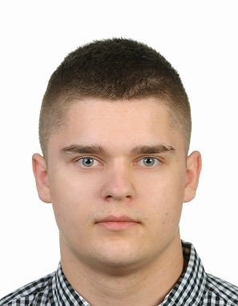

Krzysztof Buda

Data urodzenia:
10.05.1998
Adres:
Wrocław
Ukryte
Telefon:
Ukryte
E-mail:
buda.krzysztof00@gmail.com
Wykształcenie
10.2020 - obecnie
Politechnika Wrocławska- studia stacjonarne I stopnia
- Wydział: Elektroniki, Mikrosystemów i Fotoniki
- Kierunek: Elektronika i Telekomunikacja
- Specjalizacja: Elektronika Cyfrowa
09.2014 - 08.2018
Zespół Szkół Technicznych „ Mechanik” w Jeleniej Górze
- Uzyskany profil zawodowy: Technik Mechatronik
Doświadczenie Zawodowe
07.2019 - 09.2019
Leroy Merlin – Pracownik magazynowy
Zakres obowiązków:
- Obsługa klienta
- Obsługa programów magazynowych
- Kompletowanie i wydawanie zamówień
- Obsługa wózka widłowego
- Rozładunek i przyjęcie towaru na magazyn
06.2018 - 08.2018
Stacja benzynowa Circle K- Pracownik stacji benzynowej
Zakres obowiązków:
- Obsługa klienta
- Obsługa kasy fiskalnej
- Dbałość o porządek zgodnie ze standardami firmy
- Wykładanie towaru
07.2017 - 08.2017
Formel D Group- Inspektor do spraw kontroli części
Zakres obowiązków:
- Kontrola jakości części wnętrz samochodowych
Uprawnienia oraz certyfikaty
- Wózki Jezdniowe i Podnośnikowe (UDT)
- Uprawnienia Elektro-energetyczne SEP do 1kv
- Książeczka sanepidowska
Dodatkowe informacje
Obsługa komputera
- Obsługa programu Microsoft Office- Word oraz Excel
- Podstawy C++, Python, HTML, CSS
Prawo Jazzdy: kat B
Zainteresowania
Elektronika, sport, modelowanie 3D, programowanie